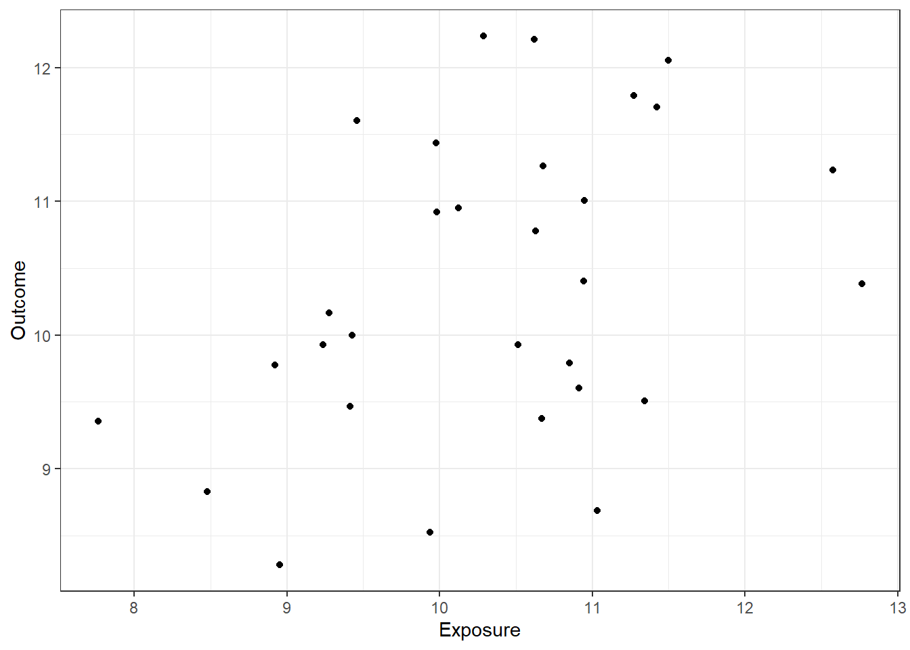
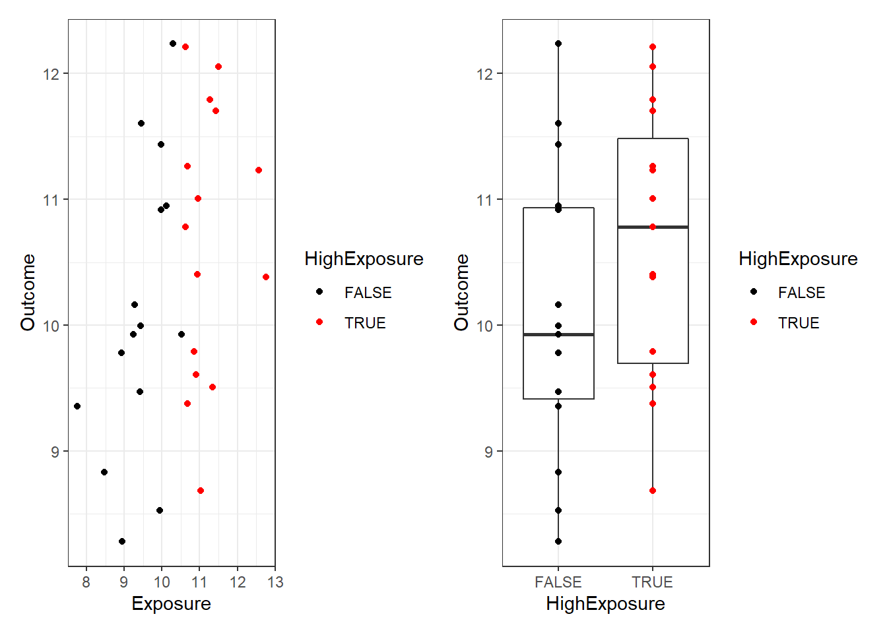
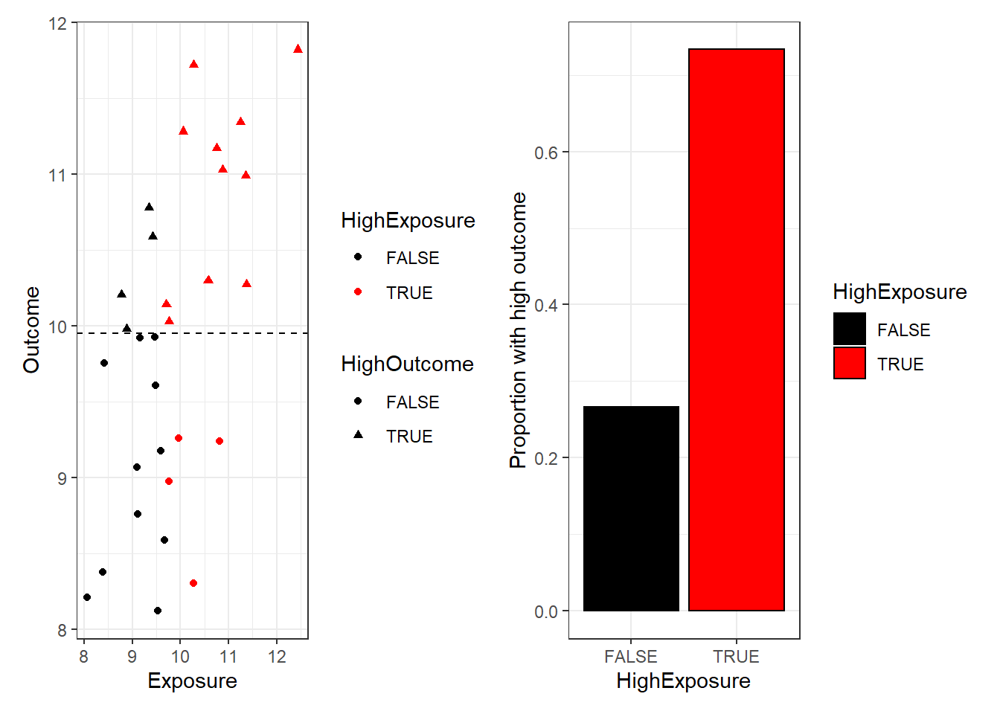
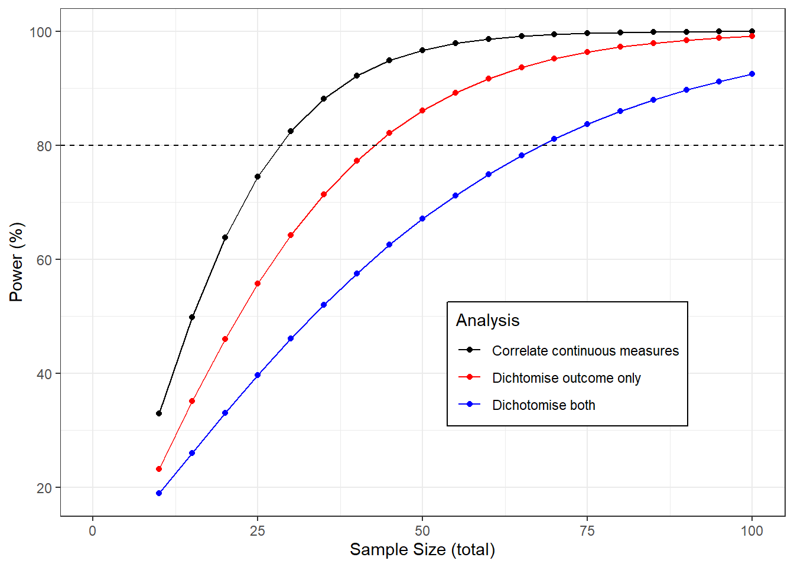

If we have continuous data then we should keep it continuous in analysis. Grouping samples into (say) ‘high’ vs ‘low’ or ‘recovered’ vs ‘not recovered’ throws away information and makes it more difficult to detect associations. The power of your study is reduced and the sample size needed goes up.
Suppose we are interested in the effect of an exposure on an outcome, and we have measured both in a sample. Both our exposure and our outcome are measured as continuous variables, for example we might be interested in the effect of fibre intake on gut microbial diversity.
There are a couple of possible approaches to the analysis. First, we could estimate or test for a correlation between the exposure and the outcome.
Alternatively we could dichotomise the exposure, splitting the samples into a “high fibre” and a “low fibre” group, before comparing the microbial diversity in each group. Or we could dichotomise the outcome into “high diversity” and “low diversity”.
Which should we choose? Intuitively we might prefer the dichotomised version for ease of interpretation, but how does it affect our ability to detect any association?
We’ll need the following R packages for this simulation:
library(pwr)
library(rmarkdown)
library(knitr)
library(ggplot2)
library(patchwork)
library(MASS)
library(data.table)Suppose our exposure and outcome are both normally distributed with a correlation of 0.5.
We can sample 50 points as follows:
dat = data.frame(mvrnorm(n=30, mu=c(10,10), Sigma = matrix(c(1,0.5,0.5,1),nrow=2)))
names(dat) <- c("Exposure", "Outcome")
ggplot(dat, aes(x=Exposure, y=Outcome)) + geom_point() + theme_bw()
How can we estimate or test this correlation by statistical analysis?
The simplest way would be to test
cor.test(dat$Exposure, dat$Outcome)##
## Pearson's product-moment correlation
##
## data: dat$Exposure and dat$Outcome
## t = 2.8188, df = 28, p-value = 0.008749
## alternative hypothesis: true correlation is not equal to 0
## 95 percent confidence interval:
## 0.1322991 0.7101417
## sample estimates:
## cor
## 0.470159So in our sample this correlation is clearly detectable (estimated r=0.47, p=0.0075).
Dichotomising means splitting variables into two groups. In our example we might decide to compare those with a high vs a low exposure. Lets make a variable corresponding to whether the exposure for each participant is above observed median. This will split the data into two groups, and we can describe how the outcome differs between the high and low exposure groups:
dat$HighExposure <- dat$Exposure > median(dat$Exposure)
(ggplot(dat, aes(Exposure, Outcome, color=HighExposure)) +
geom_point() + theme_bw() +
scale_color_manual(values=c("black", "red")))+
(ggplot(dat, aes(HighExposure, Outcome)) +
geom_boxplot() + geom_point(aes(color=HighExposure)) + theme_bw()+
scale_color_manual(values=c("black", "red")))
Now we can use (for example) a t-test to for difference in outcome between “high” and “low” exposure groups:
t.test(data=dat, Outcome ~ HighExposure)##
## Welch Two Sample t-test
##
## data: Outcome by HighExposure
## t = -1.6283, df = 26.387, p-value = 0.1153
## alternative hypothesis: true difference in means between group FALSE and group TRUE is not equal to 0
## 95 percent confidence interval:
## -1.049005 0.121284
## sample estimates:
## mean in group FALSE mean in group TRUE
## 9.859304 10.323165The difference is now barely detectable (p=0.02)!
We could go further, and dichotomise both the outcome and the exposure.
dat$HighOutcome <- dat$Outcome > median(dat$Outcome)
(ggplot(dat, aes(Exposure, Outcome, color=HighExposure, shape=HighOutcome)) +
geom_point() + theme_bw() + geom_hline(yintercept=median(dat$Outcome),lty=2)+
scale_color_manual(values=c("black", "red")))+
(ggplot(dat, aes(HighExposure, as.numeric(HighOutcome))) +
geom_bar(stat="summary", fun.y=mean, col="black", aes(fill=HighExposure)) + theme_bw()+
labs(y="Proportion with high outcome")+
scale_fill_manual(values=c("black", "red")))
Now our relationship seems obscured. Our analysis consists of analysing a 2x2 contingency table:
table(dat$HighExposure, dat$HighOutcome)##
## FALSE TRUE
## FALSE 10 5
## TRUE 5 10chisq.test(table(dat$HighExposure, dat$HighOutcome))##
## Pearson's Chi-squared test with Yates' continuity correction
##
## data: table(dat$HighExposure, dat$HighOutcome)
## X-squared = 2.1333, df = 1, p-value = 0.1441The difference in ‘high outcome’ proportions between exposure groups is not statistically significant! (p=0.14). This shows that it is much more difficult to see the relationship if we throw away the exact values of the data points.
So although there is a real relationship between exposure and outcome that we have been able to detect by correlating the values in our sample, it was harder to detect when we dichotomised the exposure, and we could not detect it at all in the grouped data.
Our single example illustrated that dichotomising data made analysis difficult or impossible by discarding data.
We can quantify this loss of information by power calculations, and consider how much our sample size would need to increase to overcome this.
The graph below shows the power to detect a correlation of 0.5 as the sample size changes using each of the methods described above.
If we analyse the continuous data then we need a sample size of about 28 for a power of 80%. If we dichotomise the exposure only we would need 43 samples, if we dichotomise both and analyse the 2x2 table we would need 69, more than twice the original sample.
sampleSizes <- seq(10,100,5)
powers <- data.table(t(sapply(sampleSizes, function(n){c(
sampleSizes=n,
continuous=100*pwr.r.test(r=0.5, n = n)$power,
dichotone=100*pwr.t.test(d=.8 / 0.91, n = n/2)$power,
dichotboth=100*pwr.2p.test(h=ES.h(1/3, 2/3), n = n/2)$power
)
})))
ggplot(melt(powers,id.vars = "sampleSizes", variable.name = "Analysis", value.name = "Power"),
aes(sampleSizes, Power, color=Analysis)) +
geom_line() +
geom_point() +
theme_bw() +
scale_x_continuous(limits=c(0,100)) +
labs(x="Sample Size (total)", y="Power (%)") +
scale_color_manual(labels=c(dichotboth="Dichotomise both",
dichotone="Dichtomise outcome only",
continuous="Correlate continuous measures"),
values=c("black", "red", "blue")) +
theme(legend.position = c(0.7,0.3), legend.background = element_rect(linetype = 1, size = .5, colour = "black")) +
geom_hline(yintercept=80, lty=2)
Grouping up our continuous variables for analysis throws away information. It makes associations more difficult to detect, and increases the number of samples we need to analyse.
There are other harmful consequences to dichotomising data. Sometimes a defense of the practice is that by collapsing quantiative findings into yes/no outcomes makes results easier to interpret, but Stephen Senn makes a good case that this is wrong and can even be misleading.
So in general, if the phenomenon you are interested in can be measured continuously then you should do so, and be sure to use all of this quantitative information in the analysis.